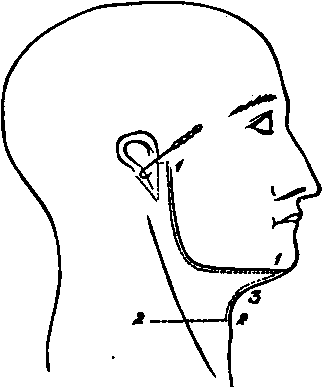

A Dissection To Expose The Hypoglossal Nerve In The Extra-Cranial Part Of Its Course
Description
This section is from the book "A Manual Of Dissections Of The Human Body", by R. E. Carrington. Also available from Amazon: A manual of dissections of the human body.
A Dissection To Expose The Hypoglossal Nerve In The Extra-Cranial Part Of Its Course
Position
The body lying upon its back, the face rotated to the opposite side to that upon which the dissection is to be made, the jaw pulled well upwards, so as to extend the head, and the Hyoid bone drawn downwards by hooks.
I. Skin Incisions
1. From the middle line in front along the base of the jaw, and the posterior border of the Ramus as high as the Zygoma, then backwards, winding round the attachment of the Pinna, to the Mastoid process.
2: Transversely from the middle line opposite the Hyoid bone, outwards to a point vertically below the hinder end of No. 1.
3. Join the anterior ends of Nos. 1 and 2 by a vertical incision along the median line. Reflect the flap backwards, and there will be exposed the superficial fascia, containing—
1. Twigs of the Posterior Auricular artery behind the Pinna.
2. An Anterior Auricular artery to the front of the Pinna.
3. Cutaneous offsets of the Submental branch of the Facial artery below the jaw.
4. The Great Auricular nerve crossing the Sternomastoid muscle obliquely towards the Pinna, and dividing into Mastoid, Auricular, and Facial branches.
No. 4.
5. Cutaneous twigs of the upper branch of the Superficial Cervical nerve beneath the jaw.
II
a. Remove the superficial fascia, and expose the Platysma myoides muscle running up to the base of the jaw, from the middle line nearly as far back as the angle. Take this away, and expose the fascia lata, which should then be cleaned away. In the course of this dissection, the upper branch of the Superficial Cervical nerve, and the Infra-maxillary branch of the Facial nerve will come into view. They will both be found to lie at first, beneath the deep fascia, and to communicate with one another ; they then perforate the fascia, and again communicate, and then the former is distributed to the skin, and the latter to the Platysma muscle. They may now be removed.
When this is done, the Parotid and Submaxillary glands will come into view, with many other structures. It will be convenient to take the glands away at once, to avoid enumerating the same parts twice over.
b. In removing the Parotid gland, the following structures will be found in its substance from the surface inwards:—
1. The commencement of the Facial nerve, and its division into Cervico-facial and Temporo-facial offsets. When the gland is completely removed the exit from the Stylo-mastoid foramen will be seen, and the Posterior Auricular, and the branches to the Digastric and Stylo-hyoid muscles observed coming off close to the point of exit. The nerve should be removed.
2. The External Jugular vein and the commencement of its communications with the Internal Jugular and Facial veins. These and the Internal Maxillary vein should be divided, and the External Jugular removed.
3. The External Carotid artery, its Anterior and Posterior Auricular, Temporal, and Internal Maxillary branches, and the Transverse Facial offset of the Temporal. All these should be divided, and the trunks removed.
c. In removing the Submaxillary gland, the Facial vein will be found passing oyer it, and should be cut away ; the Facial artery traversing it, or grooving its deep surface and giving off in its substance the Submental and Submaxillary offsets. It also should be divided above and below, and these branches taken away.
The following structures will now be exposed—
1. The body of the Hyoid bone and the greater Cornu, at the lower part of the dissection.
2. Part of the Sterno-Mastoid muscle behind, running up to the Mastoid process.
3. Both bellies and the tendon of the Digastric muscle.
The posterior belly running downwards and forwards from beneath the Sterno-mastoid muscle, the tendon attached by areolar tissue to the body of the Hyoid bone, and the anterior belly running thence, upwards and forwards, to the lower jaw close to the Symphysis.
4. The Stylo-hyoid muscle parallel with, and in front of the posterior belly of the Digastric muscle, seen splitting below for the tendon of the latter to be attached to the body of the Hyoid bone.
5. The Mylo-hyoid muscle, running up from the body of the Hyoid bone to the lower jaw.
6. The Hyoglossus muscle, seen in small part behind the Mylo-hyoid, and running up beneath it.
7. The under surface of the angle of the jaw can be seen, and the Internal Pterygoid muscle lying upon it.
8. The External Carotid artery, and the following branches: the commencement of the Occipital and Lingual: the origins of the divided Temporal, Posterior Auricular, and Facial The last may be seen giving off the Tonsillar and Inferior Palatine offsets.
9. Owing to the retraction of the Sterno-mastoid muscle on the division of the process of fascia, extending from the angle of the jaw to its anterior border, the Internal Carotid artery, and the:
10. Internal Jugular vein behind it.
11. The Mylo-hyoid branch of the Inferior Dental artery lying upon its muscle.
12. Radicles of the Anterior Jugular vein beneath the chin.
18. The Vagus nerve between the Internal Carotid artery and the Internal Jugular vein.
14. The branch of the Inferior Dental nerve, to the Mylo-hyoid and Digastric muscles. The small twig supplying the latter, however, being traceable before the removal of the Submaxillary gland.
15. The Hypoglossal nerve winding round the Occipital artery, and then running transversely forwards beneath the posterior belly of the Digastric muscle. The Descendens noni branch upon the External Carotid artery and the commencement of the twig to the Thyro-hyoid muscle. 16. Lymphatic glands of the Submaxillary region.
II
a. Cut through the Mylo-hyoid muscle at its attachment to the jaw and the median raphe, and turn it downwards.
J. Remove the exposed portion of the Sterno-mastoid muscle.
c. Remove the whole of the Digastric and the Stylohyoid muscles. The nerves to these and the preceding muscles will be divided.
d. Divide the External Carotid artery below the point at which it is crossed by the Hypoglossal nerve. Cut through its Occipital offset, and the Inferior Palatine and Tonsillar branches of the Facial artery. Remove the upper portion and pull down the lower.
The Styloid process will now come into view, and the different structures attached to it.
1. The Stylo-glossus muscle, and Stylo-hyoid and Stylomaxillary, ligaments to the tip.
2. The origin of the Stylo-hyoid muscle from the centre of the outer surface, and:
3. The Stylo-pharyngeus muscle from the inner side of the base.
e. Cut the process through at the base with the forceps, and pull it down with the structures attached to it, having previously detached the Stylo-glossus muscle.
f. Divide the Internal Jugular vein above and below, and remove it. The following structures will now come into view—
1. Above, the transverse process of the Atlas, and a small portion of the Rectus capitis lateralis muscle.
2. The Hyoglossus muscle running upwards from the body, and greater and lesser Cornua of the Hyoid bone to the side of the tongue.
3. The Stylo-glossus muscle at the upper border of the preceding muscle, divided posteriorly.
4. The Genio-hyoid muscle in front, running up from the body of the Hyoid bone to the lower jaw.
5. The Genio-hyo-glossus muscle in front of the Hyoglossus, and above the Genio-hyoid muscle.
6. The Middle Constrictor muscle, posteriorly.
7. Lying upon the Hyoglossus from above downwards: a. The Gustatory nerve, and the Submaxillary ganglion.
b. The deep part of the Submaxillary gland, with Wharton's duct running upwards and forwards from it, and passing beneath the preceding nerve.
c. The Hypoglossal nerve lower down. It may now be seen in the whole of its course. At its commencement it is closely conjoined with the Vagus nerve, it then descends vertically, next turns forward on the Hyoglossus, and is finally distributed to the Hyoglossus, Stylo-glossus, Genio-hyoid, and Genio-hyo-glossus muscles. The commencement of the Descendens noni and Thyro-hyoid branches may also be seen, as well as the loops of communication with the Gustatory nerve, at the anterior border of the Hyoglossus muscle.
8. Issuing from the anterior border of the Hyoglossus muscle is the Ranine branch of the Lingual artery, with its vein.
9. Passing under the posterior border of the same muscle are from above downwards— a. The Glosso-pharyngeal nerve, which may also be seen from the base of the skull downwards, b. The Stylo-hyoid ligament, in the centre, c. The Lingual artery, lowest of all.
10. The Internal Carotid artery will be seen running up to the base of the skull, deep down in the hollow behind the Ramus of the jaw.
11. The Ascending Pharyngeal artery in front of, but parallel with the Carotid.
12. The Vagus nerve is seen passing down behind the artery, and giving off the Superior Laryngeal nerve beneath it, and the Pharyngeal branch either over or under the vessel.
12. The Spinal-accessory nerve is seen with the Vagus. It will probably be cut below by the removal of part of the Sterno-mastoid muscle.
14. The Superior Cervical ganglion of the Sympathetic nerve will be displayed.
15. The loop of the anterior primary branches of the first and second Cervical nerves in front of the transverse process of the Atlas.
16. Communications between this loop and the Vagus, Hypoglossal, and Sympathetic nerves are traceable. The preceding structures of the Submaxillary region may all be displayed if the preceding directions have been followed; a more satisfactory view, may, however, be obtained if, after the reflection of the Mylo-hyoid muscle (Stage III.), the following steps be taken:— a. Sew the tip of the tongue to the Septum nasi. J. Divide the lower jaw and investing soft parts, in front near the Symphysis, and behind at the junction of the body and Ramus, and turn the included piece upwards. In the anterior incision the following structures will be divided:—
1. Skin.
2. Superficial and deep fasciae.
3. The Orbicularis oris muscle, and Inferior Coronary artery.
4. Depressor labii inferioris muscle.
5. Levator menti muscle.
6. The bone.
7. The mucous membrane of the mouth. In the posterior incision—
1. Skin.
2. Superficial and deep fasciae.
3. Facial vessels lying upon the bone.
4. Supra-maxillary, and Buccal branches of the Facial nerve.
5. Buccinator muscle.
6. Depressor anguli oris muscle.
7. Bone, and Inferior Dental nerve and artery in its substance.
8. The mucous membrane of the mouth, which should also be detached from the bone between the two incisions.
If the bone be turned up in this way, the Sublingual gland and the Sublingual branch of the Facial artery will in addition come into view, above the anterior border of the Genio-hyo-glossus muscle. The Hypoglossal nerve may also be more fully traced into the substance of the tongue.
Continue to:
- prev: A Dissection To Expose The Otic Ganglion And The Cartilaginous Portion Of The Eustachian Tube
- Table of Contents
- next: A Dissection To Expose Fully The First Dorsal Nerve